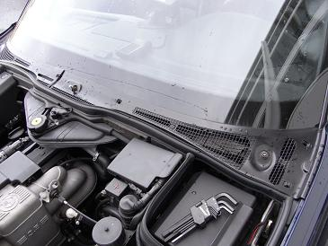
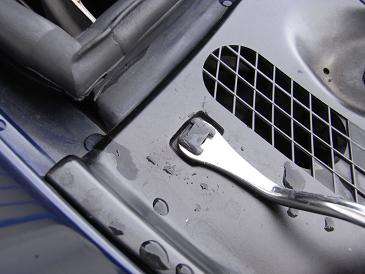
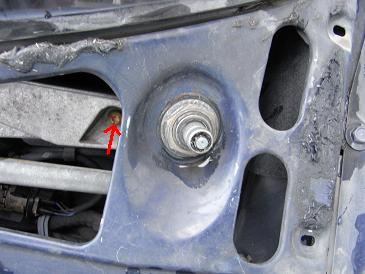
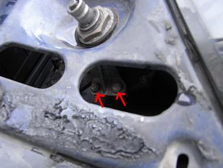
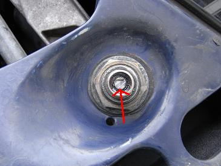
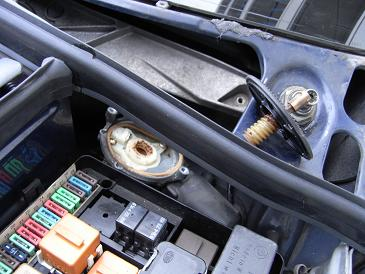
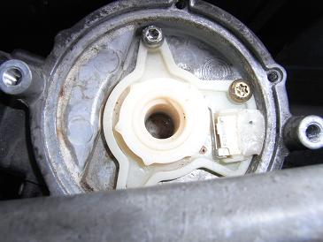
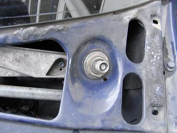

 まず、ワイパーアームを外す。 助手席側は13mmのナット、運転席側は六角レンチでボルトを緩めてアームを引き抜く。
|
 アームが外れたら、8個のプラスチックのリベットを外す。このリベット(P/N51711928946)は割れやすいので予備を用意しておくと良い。
|
  カバーを外すと、プレッシャーコントロールのモーターを固定しているネジにアクセスできる。 矢印の3本で固定されている。これらはトルクスネジだ。
|
 ここで、注意が必要となるのはこの矢印部分の棒だ。 モーターassyを取り外すと落ちてきてしまう。
|
  モーターが思ったよりも大きく、外へ出すには苦労しそうだったので、ここで清掃とグリスアップをすることにした。 3本のネジを外して、反時計回りにまわすと上のプラスチックのネジが取り外せる。
|
 清掃後は、適当な量のグリスを塗って元通りに組み付ければ完成だ。 メンテナンス後は、かすかにモーターの作動音が聞こえる程度になった。無事に本来の機能を果たしているようだ。
|